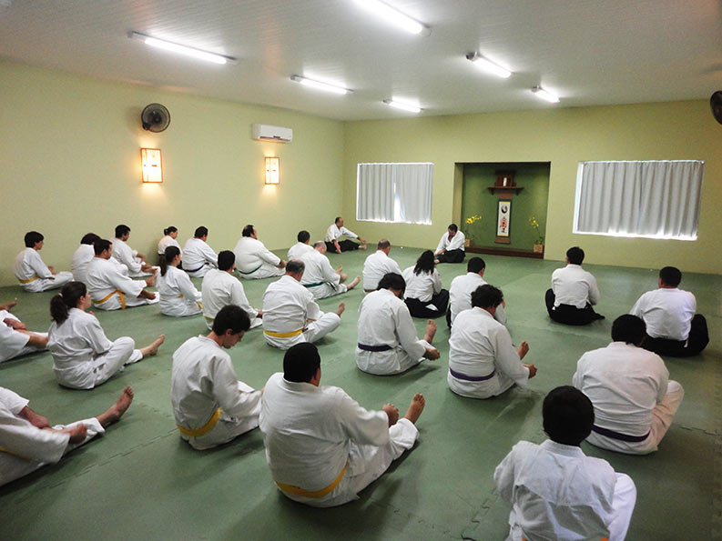

Portfólio Web - Paulo Lins
Um pouco mais sobre mim
Sou brasileiro, nasci e moro em Fortaleza no estado do Ceará.
Adoro tecnologia e acredito que ela pode nos levar à resolução
de diversos problemas. Propiciando uma vida mais tranquila e o desenvolvimento sustentável.
Módulo HTML e CSS. Parte 1. Currículo Web.
Sou praticante de aikido há 30 anos e há 20 anos dou aulas desta
arte marcial.
Atualmente sou estudante da trybe.
Empresa que busca a excelência na formação
de desenvolvedores de software.
Formação
Me formei em Arquitetura, fiz pós-graduação em Educação.Fui professor universitário por quase 7 anos.Neste período fiz parte
do grupo de pesquisa em multimídia e da equipe de professores que
implementou o Nead (Núcleo de Educação à Distância) da Universidade de Fortaleza.
Trabalhos
Na Universidade de Fortaleza contribuí como professor e pesquisador de 2000 a 2006.
Lá pude contar com a generosidade de outros professores com os quais aprendi muito.

Sou professor de aikido e, há 20 anos, ministro aulas no Linsei Dojô em Fortaleza.

Atualmente sou estudante da trybe.
Empresa que busca a excelência na formação
de desenvolvedores de software.
Computação gráfica
Edição de vídeo
Multimídia
Criação de Identidade Visual para empresas
Habilidades e competências
- Trabalho em equipe- Photoshop
- Premiere
- After Effects
- Illustrator
- Fotografia
- Produção gráfica
- Atualmente estou desenvolvendo habilidades e competências
relacionadas ao desenvolvimento de software na TRYBE. De todas as habilidades e competências listadas acima,
a que mais me orgulho é a capacidade de trabalhar em equipe.